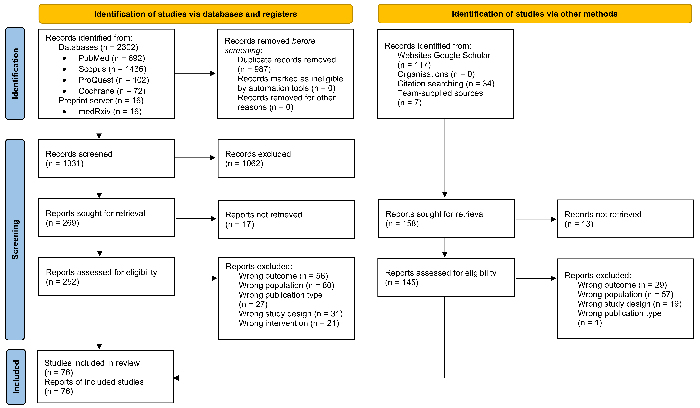
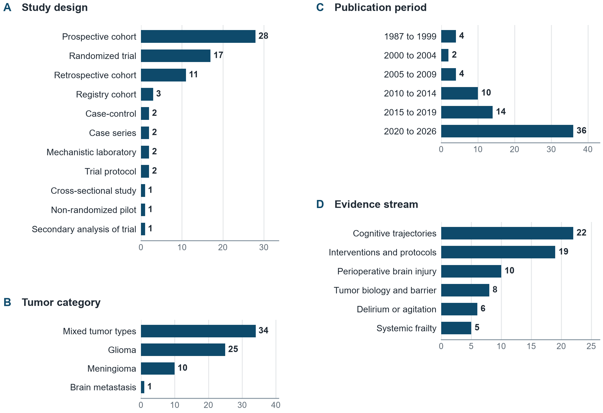
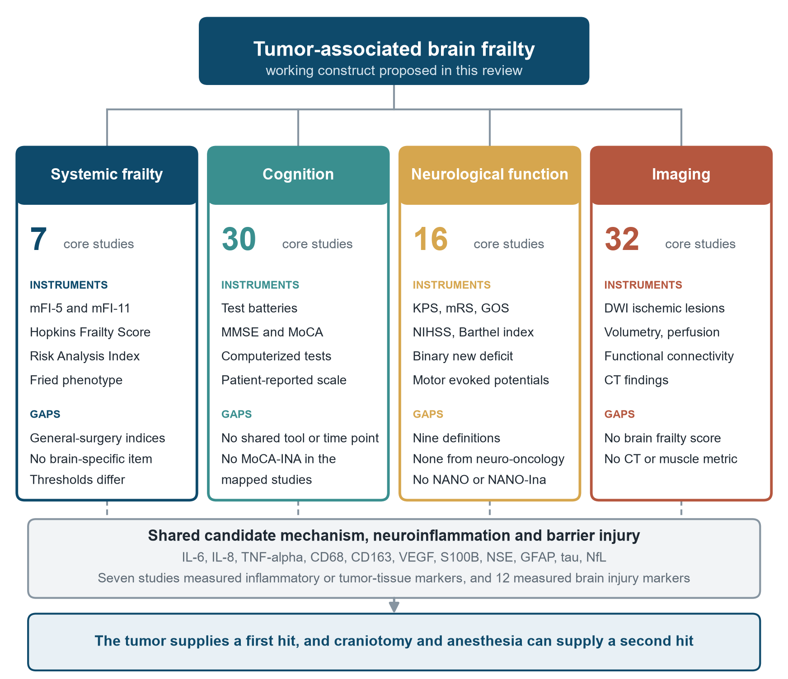
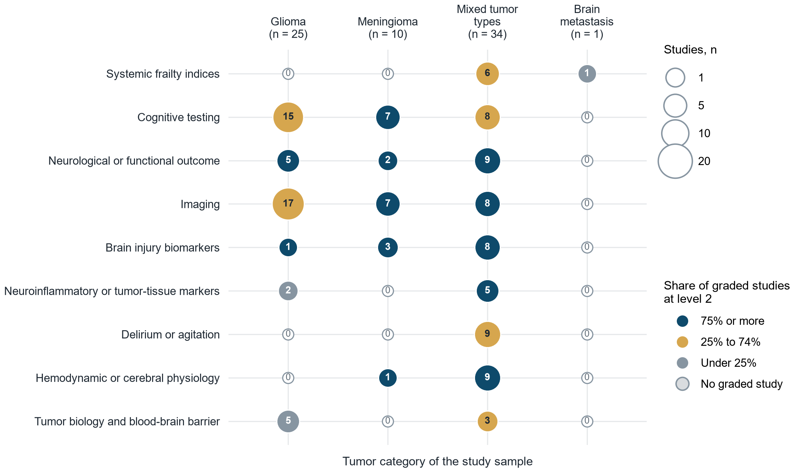
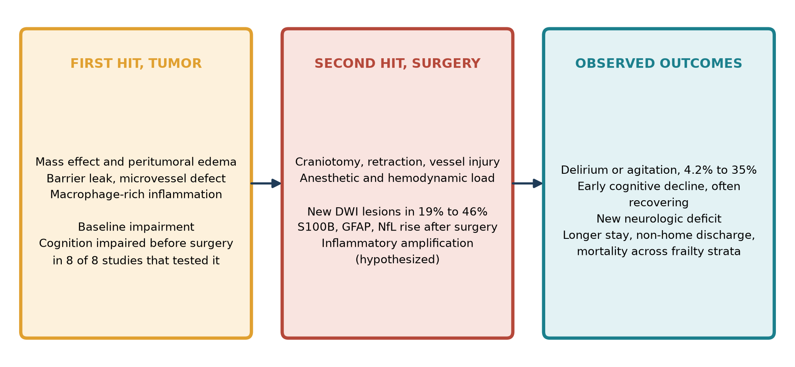

0
Systemic frailty
mFI-5, mFI-11, Hopkins score, Risk Analysis Index, Fried phenotype
GapGeneral-surgery indices with no brain-specific item, thresholds vary.
Scoping review · 76 studies · neuro-oncologic surgery
Concepts, domains, neuroinflammatory mechanisms, and biomarkers behind perioperative brain injury, mapped from the literature and organised as a two-hit model.
Abstract
Can the vulnerable brain of a patient with a brain tumor be described as a concept, and do neuroinflammation and perioperative brain injury act as shared mechanisms in malignant and benign tumors?
JBI scoping methodology and PRISMA-ScR. Six sources searched to 22 March 2026, with citation searching and client-supplied sources on the Indonesian MoCA and NANO instruments. Evidence mapping and direction-of-effect tallies, no pooling.
No core study defined brain frailty. Cognition was impaired before surgery in 8 of 8 studies that tested it, new diffusion-weighted lesions followed 18.8% to 45.7% of resections, S100B, GFAP and NfL rose after surgery, and no meningioma-only study measured a cytokine.
A four-domain construct with a two-hit course. The tumor is the first hit and perioperative brain injury the second. The interaction between the hits has not been tested.
Four domains
mFI-5, mFI-11, Hopkins score, Risk Analysis Index, Fried phenotype
GapGeneral-surgery indices with no brain-specific item, thresholds vary.
Batteries, MMSE and MoCA, computerized tests, patient report
GapNo shared tool or time point, no MoCA-INA in the mapped trials.
KPS, NIHSS, mRS, GOS, Barthel, binary new deficit
GapNine instruments or definitions, none from neuro-oncology, no NANO.
DWI infarcts, volumetry, perfusion, connectivity, CT findings
GapNo brain frailty score, no CT or temporal muscle metric.
Mass effect, peritumoral edema, barrier leak, and macrophage-rich inflammation leave less reserve before surgery begins.
8 of 8Craniotomy and anesthesia add ischemic injury, marker release, and hemodynamic load to a brain already under strain.
18.8–45.7%Delirium or agitation in 4.2% to 35% of observational cohorts, with frailty strata separating risk.
4.2–35%Analysis lab
The particle brain is a conceptual illustration of the model, not a prediction. The bars are real counts from the 70 core studies.
Interactive
Drag to rotate and scroll to zoom. Hover a bubble in the map to list its studies.
Figures

FIGURE 1 · PRISMA FLOW
FIGURE 2 · CHARACTERISTICS
FIGURE 3 · DOMAINS
FIGURE 4 · EVIDENCE MAP
FIGURE 5 · TWO-HIT MODELMaterials
Cite
Tarimah K, Wiyarta E. Tumor-associated brain frailty and perioperative brain injury in neuro-oncologic surgery: a scoping review. Materials and data. 2026. https://github.com/sharing-123/tumor-associated-brain-frailty-and-perioperative-brain-injury-scoping-review